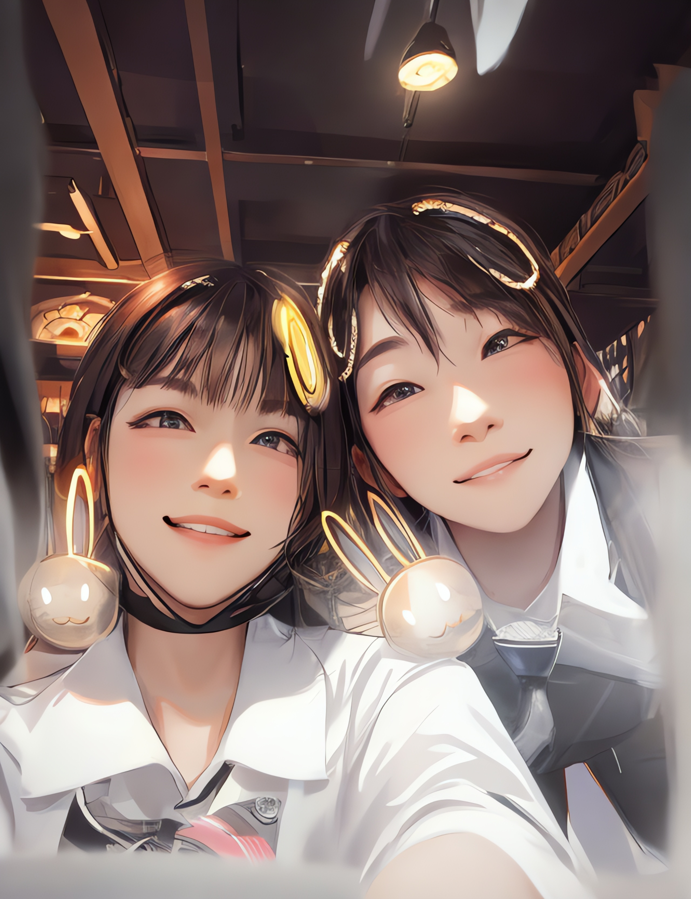
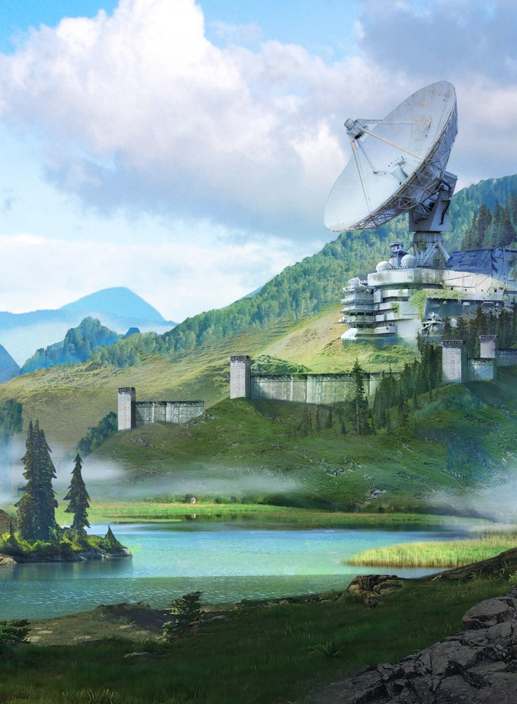
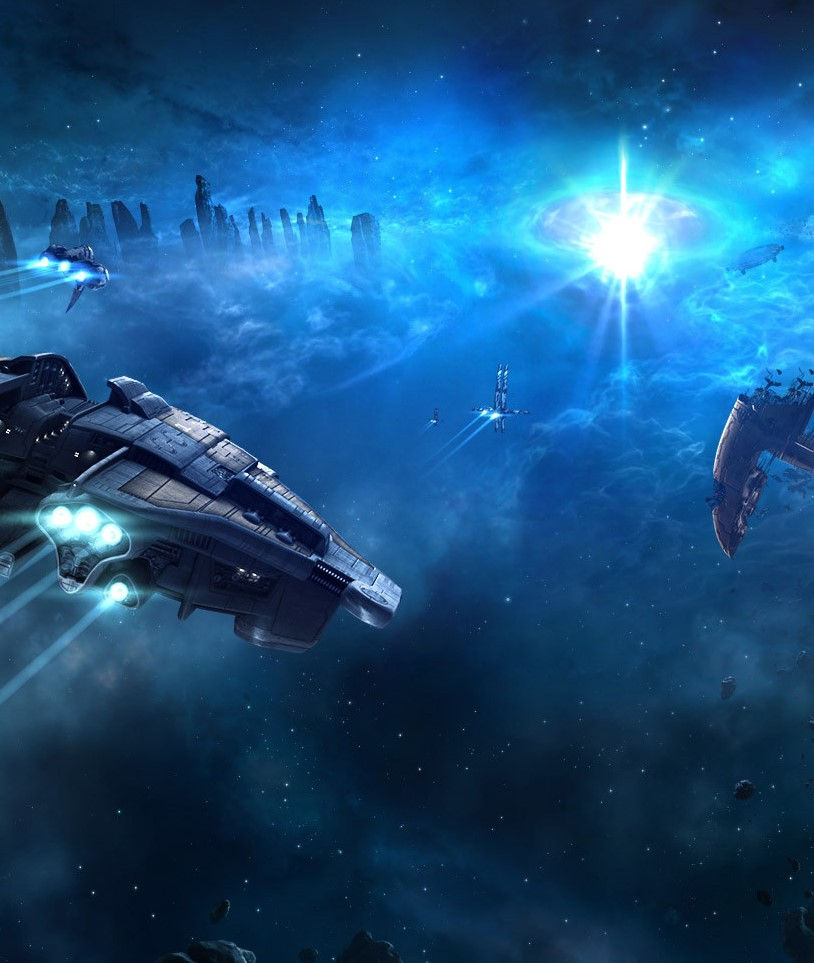
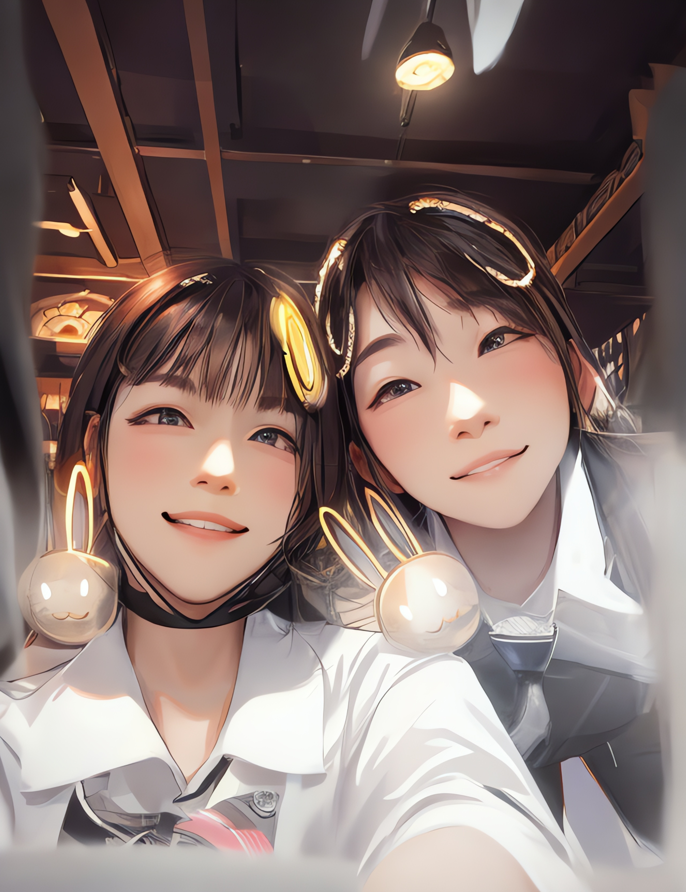
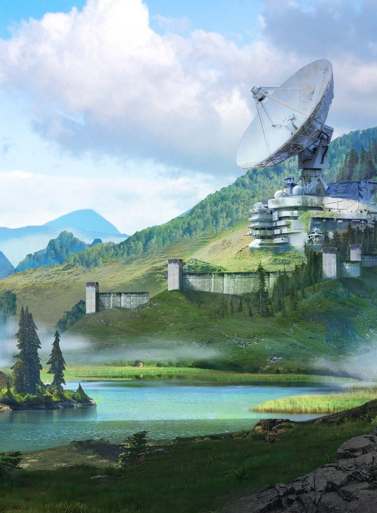
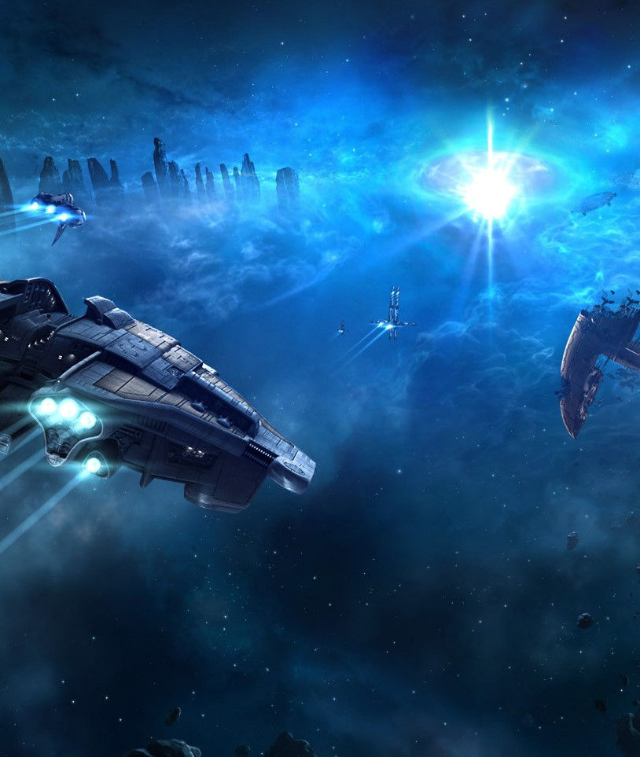

Life is like traversing the stars:It is like a poem,With rhythms and rules to follow,But it is also full of colors and endless possibilities.

 





My dream is simple: to have every word flow with rhythm and no regrets about my choices.
About Star Weave